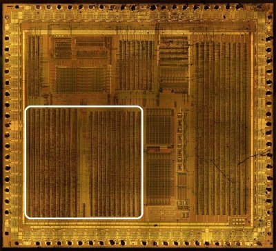

PPU

The description is divided into 2 parts (according to the modules), so as not to torment the browser with large pictures.
PPU SoC boundary (external signals)
Interface between the whole PPU (PPU1 + PPU2, treated as one block) and the rest of the die. A net is external when at least one non-PPU block touches it: ClkGen, SM83Core/Arbiter, MMIO, the OAM RAM macro, pads or a global rail. Nets that run exclusively between PPU1 and PPU2 are excluded from these tables (per-part port tables: PPU1 signals, PPU2 signals).
Directions are from the PPU side. Net names are the dmgcpu.v pin names.
The wiring was cross-checked against HDL/soc/dmgcpu.v (all instances); the
table rows are grouped by the SoC block on the other end.
Clocks and reset — from ClkGen
| Signal | Dir | Width | In PPU | Connects to | Function |
|---|---|---|---|---|---|
cclk |
In | 1 | PPU2 | ClkGen.cclk (also APU.cclk) |
Complement master clock — the PPU dot clock (ppu_clk = cclk, generated inside PPU2) |
clk6 |
In | 1 | PPU2 | ClkGen.clk6 (also SM83Core, MMIO, APU) |
Clock 6 (INC_CLK_P); in PPU2 only re-buffered as clk6_delay for MMIO |
n_reset2 |
In | 1 | PPU2 | ClkGen.n_reset2 (also Arb, MMIO, APU, Ser) |
Global reset, active low — source of n_ppu_hard_reset inside PPU2 |
Clock topology: ClkGen → PPU2 (
cclk,clk6,n_reset2). PPU2 then synthesizes the clocks the other side uses:ppu_clk(=cclk) andppu_rd/ppu_wr(re-drivensoc_rd/soc_wr) are sent to PPU1 and MMIO;n_ppu_clk,h_restart,vclk2… stay PPU1↔PPU2 internal. PPU1 has no direct ClkGen contact — every clock/PPU strobe reaches it from PPU2 (ppu_clk,n_ppu_clk,ppu_rd,ppu_wr,n_ppu_hard_reset).
PPU-generated clocks, strobes, resets and interrupts — to MMIO / Arbiter
| Signal | Dir | Width | Owner | Connects to | Function |
|---|---|---|---|---|---|
ppu_clk |
Out | 1 | PPU2 | MMIO (also PPU1) | PPU clock, = cclk (dot clock) — MMIO times its register accesses with it |
clk6_delay |
Out | 1 | PPU2 | MMIO | Delayed clock 6, = clk6 |
n_ppu_hard_reset |
Out | 1 | PPU2 | MMIO, Arbiter (also PPU1) | PPU hard reset, = !n_reset2 |
ppu_rd / ppu_wr |
Out | 1+1 | PPU2 | MMIO (also PPU1) | PPU read/write strobes, = soc_rd/soc_wr — mark PPU-register accesses for MMIO |
ff46 |
Out | 1 | PPU1 | MMIO | DMA register ($FF46) access indicator |
ppu_int_stat |
Out | 1 | PPU1 | MMIO | STAT interrupt request (IF bit 1) |
ppu_int_vbl |
Out | 1 | PPU1 | MMIO | VBLANK interrupt request (IF bit 0) |
CPU bus and address decode — Core / Arbiter / MMIO
| Signal | Dir | Width | In PPU | Connects to | Function |
|---|---|---|---|---|---|
a |
In | 13 / 8 | PPU1: a[12:0]; PPU2: a[7:0] |
die CPU address bus (SM83Core, MMIO, Arb, BootROM, HRAM, APU) | Register / VRAM / OAM access address |
d |
Bidir | 8 | PPU1 + PPU2 | die data bus (SM83Core, MMIO, Arb, BootROM, HRAM, APU, Ser, WaveRAM) | Register and OAM data, interrupt vector read-back |
ffxx |
In | 1 | PPU1 | Arbiter.ffxx (also MMIO, APU, HRAM) |
FFxx register-area indicator (from the CPU address decode) |
arb_fexx_ffxx |
In | 1 | PPU1 | Arbiter.arb_fexx_ffxx |
FExx (VRAM/OAM) vs FFxx (registers) arbitration select |
VRAM interface — Arbiter, MA/MD pads (external LH5164 SRAM)
| Signal | Dir | Width | Owner | Connects to | Function |
|---|---|---|---|---|---|
md |
Bidir | 8 | PPU1 + PPU2 | Arbiter (buffers to the MD pads → external VRAM SRAM) | VRAM data bus; VRAM→OAM DMA source |
n_ma |
Out | 13 | PPU1 | MA pads (pad_ma0..12 → external VRAM SRAM) |
External VRAM address, inverse-hold form of nma |
ppu_mode3 |
Out | 1 | PPU1 | Arbiter (also PPU2) | Mode 3 (pixel transfer) — VRAM contention with CPU |
sp_bp_cys |
Out | 1 | PPU1 | Arbiter (also PPU2) | Sprite buffer page cycle (VRAM slot) |
tm_bp_cys |
Out | 1 | PPU1 | Arbiter | Tile-map buffer page cycle |
n_sp_bp_mrd |
Out | 1 | PPU1 | Arbiter | Sprite buffer page memory read, active low |
n_tm_bp_cys |
Out | 1 | PPU1 | Arbiter | Tile-map buffer page cycle, active low |
The PPU-internal VRAM address bus
nma[12:0]is PPU1↔PPU2 only (both halves drive it with inverting tristates) — the chip pins carryn_ma(PPU1 → MA pads), which is the inverse-hold version of the same address.
DMA and OAM-access control — MMIO / Arbiter
| Signal | Dir | Width | In PPU | Connects to | Function |
|---|---|---|---|---|---|
n_dma_phi |
In | 1 | PPU1 + PPU2 | MMIO | DMA clock, inverted |
vram_to_oam |
In | 1 | PPU1 + PPU2 | MMIO (also Arb) | VRAM→OAM DMA in progress |
n_vram_to_oam |
Out | 1 | PPU2 | Arbiter | VRAM→OAM DMA, = !vram_to_oam |
dma_a |
In | 13 | PPU2 | MMIO (also APU: low 8) | DMA address bus (VRAM source) |
dma_run |
In | 1 | PPU2 | MMIO | DMA run (gates mode 2, the oa mux and the OAM write decode) |
dma_addr_ext |
In | 1 | PPU2 | MMIO (also Arb, APU) | DMA from external memory — selects the oam_din write-data group |
soc_rd / soc_wr |
In | 1+1 | PPU2 | MMIO (also Arb, HRAM, APU) | SoC read/write strobes — re-driven as ppu_rd/ppu_wr |
oam_dma_wr |
In | 1 | PPU2 | MMIO | OAM DMA write strobe |
cpu_vram_oam_rd |
In | 1 | PPU2 | MMIO (also Arb) | CPU VRAM/OAM read strobe (selects the returned OAM port byte) |
oam_din |
In | 8 | PPU2 | Arbiter | OAM write data (DMA-from-external cases, CPU OAM writes via Arb) |
OAM RAM macro — PPU2 only (chip-internal RAM block, HDL/soc/oam.v)
PPU2 is the sole master of the OAM RAM: the nets below run exclusively between
PPU2 and OAM (no CPU/MMIO direct access).
| Signal | Dir | Width | Function |
|---|---|---|---|
oa |
Out | 7 | OAM address bits 7:1 (bit 0 unused); four sources: CPU/DMA/scan/store |
n_oam_rd |
Out | 1 | OAM read enable, active low (mode 2, mode 3, CPU reads) |
n_oama_wr / n_oamb_wr |
Out | 1+1 | OAM port A/B write enables, active low |
oam_bl_pch |
Out | 1 | OAM bitline precharge (also the attribute-latch enable window) |
n_oama |
Bidir | 8 | OAM port A data bus, inverse hold (attribute byte) |
n_oamb |
Bidir | 8 | OAM port B data bus, inverse hold (Y byte; CPU read-back port) |
LCD driver — PPU1 to pads
| Signal | Dir | Width | Function |
|---|---|---|---|
n_lcd_ld0, n_lcd_ld1 |
Out | 1+1 | Pixel data to the LCD panel (LD0/LD1 pads), active low |
n_lcd_cp, n_lcd_cpg |
Out | 1+1 | Dot clock / clock-gate (CP, CPG pads) |
n_lcd_cpl |
Out | 1 | Line clock (CPL pad) |
n_lcd_st, n_lcd_s |
Out | 1+1 | Start / shift (ST, S pads) |
n_lcd_fr |
Out | 1 | Frame (FR pad) |
Global rails
| Signal | Dir | Width | Connects to | Function |
|---|---|---|---|---|
CONST0 |
Bidir | 1 | every large module + pads (APU, Arb, MMIO, …) | Chip-wide constant-0 rail; each module has its own const cell driving it |
Excluded — PPU1 ↔ PPU2 internal nets (reference)
Nets that never leave the PPU pair (also listed in the per-part tables):
-
PPU1 → PPU2:
ff42,ff43(SCY/SCX access),fexx,FF40_D1..D3(LCDC bits),h[7:0],v[7:0],in_window,vbl,vclk2,n_ppu_reset,ppu1_ma0(= PPU2ma0),bp_sel,bp_cy,tm_cy,oam_addr_ck,oam_rd_ck,oam_xattr_latch_cck,obj_prio_ck,oam_mode3_nrd,oam_mode3_bl_pch,n_dma_phi2_latched,nma[12:0](bidir). (ppu_mode3,sp_bp_cysalso reach the Arbiter → boundary table above.) -
PPU2 → PPU1:
n_ppu_clk,ppu_mode2,stop_oam_eval,h_restart,obj_color,obj_prio,sprite_x_flip,sprite_x_match,FF43_D0..D2(SCX bits),nma[12:0](bidir). (ppu_clk,ppu_rd/ppu_wr,n_ppu_hard_resetalso reach MMIO/Arb → boundary table above.)
Clock cadence checks (testbench)
-
The Icarus environment (
HDL/soc/icarus/ppu/ppu_env.v) instantiates the realClkGennetlist:osc_ena/clk_ena/osc_stable = 1,reset= the test reset, oscillatorn_clk_in = ~ck1(64 ns tick). PPU1/PPU2 are wired exactly as indmgcpu.vfor every boundary net listed above. -
ClkGen inputs
cpu_wr,cpu_mreq,test_1are tied to 0 in the testbench; in the netlist they feed only the sync / chip-select outputs (cpu_wr_sync,ext_cs_en) and not the clock outputs (cclk,clk6,n_reset2,clk1..9), so the clock cadence seen by PPU1/PPU2 is identical to the running SoC. MMIO/Arbiter are represented by the test's bus tasks (cpu_write/cpu_readdrivea/d/ffxx/arb_fexx_ffxx/strobe timing; DMA inputsdma_run,vram_to_oam,oam_dma_wr… are held inactive or driven by the test). -
Resulting dot cadence verified by the regression suite: 456-tick line with mode 2 = 80 ticks and mode 3 = ~173 ticks (BG-only), 160 LD pixels per line, VBlank at LY≥144 and V wrap 153→0 (
waves.md, tests 1–9).
Simulation
A regression testbench that runs the real PPU1/PPU2 netlists (with behavioral
VRAM/OAM models) lives in HDL/soc/icarus/ppu — see its Readme
and waves.md.